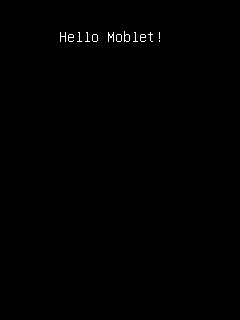

HelloMoblet is a well-commented example application for beginners. It demonstrates how to use MoSync's Moblet framework to wrap your application to ensure timely response to key events.

This example is included in the MoSync SDK installation in the /examples/Moblet folder. For information on importing the examples into your workspace, see Importing the Examples.
This application provides a very basic example of how to use MoSync's Moblet framework to detect key events and use timers. When started, it displays the text "Hello Moblet!" The text can be moved around using the joystick or you can click on the screen and the text will jump to that position.
The code is very well commented so that you can see what's happening at each step. Examine the source code of the application (in the file main.cpp) to learn how the program works.